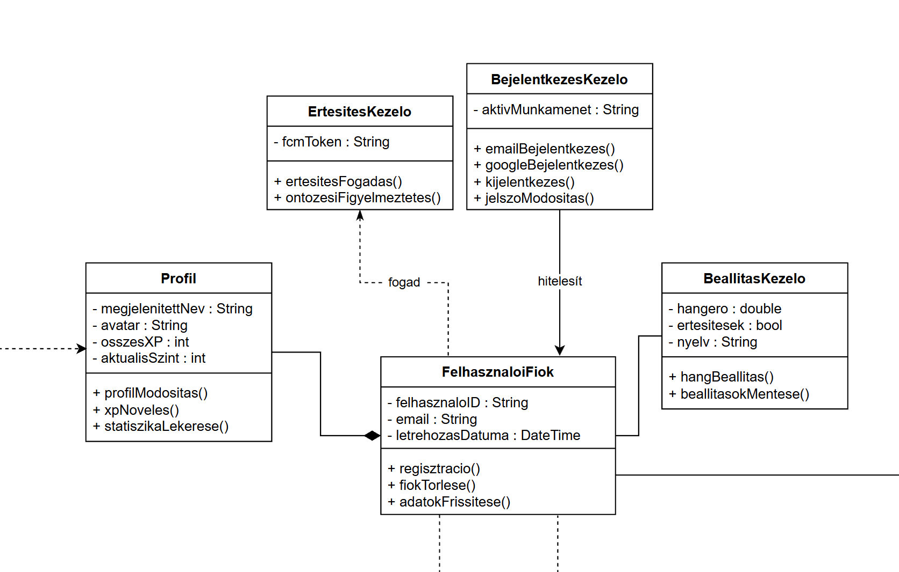
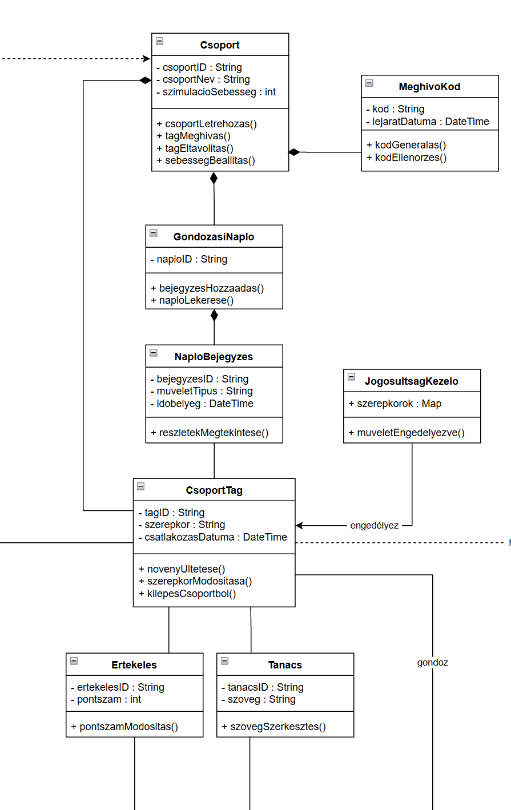
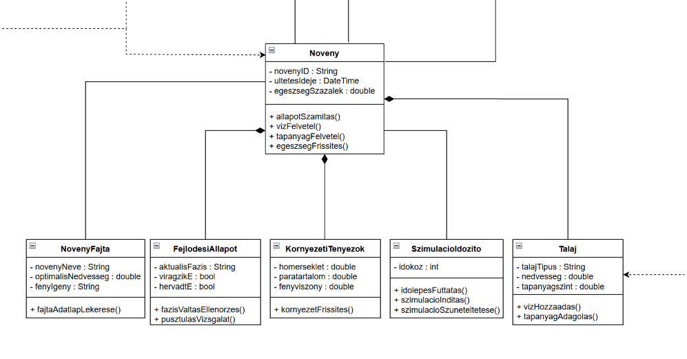
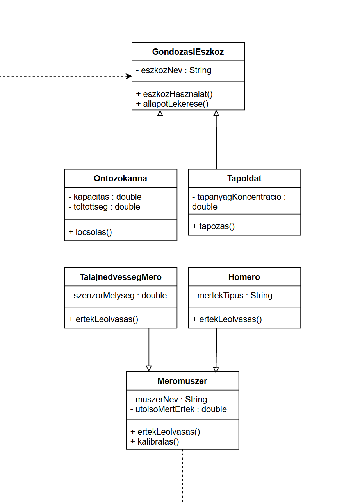
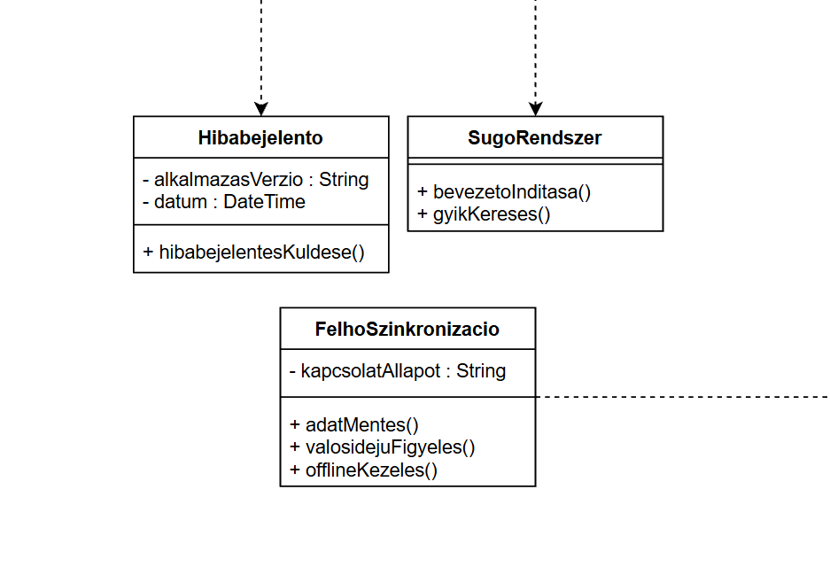

| Dátum | Verzió | Leírás | Szerző |
|---|---|---|---|
| 2026. 11. 13. | 0.1 | Kezdetleges verzió | Suba Kinga, Zsólyomi Klaudia Vanda, Baranyovszki Kata, Zsák István, Mata Márk |
1. Bevezetés
2. Kezdeti Osztálydiagram
2.1 Osztálydiagram

2.2. Osztályok felsorolása
FelhasznaloiFiok
A felhasználó alapvető regisztrációs és fiókadatait tárolja, valamint azonosítja a felhasználót a rendszerben.
Profil
A felhasználó mindenki számára látható adatait tárolja.
ErtesitesKezelo
A push értesítések fogadását és küldését felügyeli a telefon és az FCM (Firebase Cloud Messaging) token segítségével.
BejelentkezesKezelo
A felhasználó hitelesítését, belépését, kijelentkezését és a munkamenet érvényesítését kezeli.
BeallitasKezelo
A felhasználóhoz tartozó egyedi alkalmazásbeállításokat kezeli és tárolja a fiókhoz kapcsolva.
JutalmazasKezelo
Kiszámítja a megszolgált tapasztali pontokat és egyéb bónuszokat.
FeloldhatoTartalomKezelo
Nyilvántartja a szintekhez kötött növényfajtákat, dekorációkat és felügyeli azok aktiválásat és elérhetőségét.
SzintKezelo
Kiszámítja a felhasználó szintjét, és a szintlépés feltételeinek teljesülését vizsgálja.
CsoportTag
Egy felhasználó adott csoporton belüli tagságát és szerepkörét tárolja.
JogosultsagKezelo
Eldönti hogy egy csoporttag elvégezheti-e a az adott műveletet.
NaploBejegyzes
Egy elvégzett gondozási esemény konkrét adatait rögzíti.
GondozasiNaplo
A csoporton belül végrehajtott összes naplóbejegyzés időrendi gyűjtőhelye.
Csoport
A diákok és pedagógusok által alkotott csoport adatait, valamint a csoporthoz tartozó szimulációs sebességet tárolja.
MeghivoKod
A csoporthoz történő gyors csatlakozáshoz szükséges véletlenszerűen generált egyedi kódot hozza létre, valamint érvényesíti azt.
Ertekeles
Lehetővé teszi, hogy a csoporttagok és a tanárok értékeljék egymás növényeit.
Tanacs
A csoporttagok közti szöveges segítségnyújtást teszi lehetővé.
Noveny
A nevelt növény. Gondozási műveletek és környezeti hatások alapján számítja ki a jelenlegi állapotát.
NovenyFajta
Közös katalógus, amely az adott növényfaj igényeit, ideális környezeti feltételeit tárolja.
FejlodesiAllapot
A növény pillanatnyi állapotát tárolja.
KornyezetiTenyezok
A növény körüli környezet fizikai jellemzőit tárolja, valamint frissíti.
SzimulacioIdozito
A növény belső szimulációs órája. Az állapotfrissítéseket ütemezi.
Talaj
A növény alatti talaj típusát, nedvességtartalmát és tápanyagszintjét tárolja és frissíti.
GondozasiEszkoz
Egységes felületet és közös műveleteket definiálja a többi gondozási eszközzel.
Absztakt osztály.
Ontozokanna
A talaj víztartalmának növelésére szolgáló eskzöz.
Tapoldat
A talaj tápanyagtartalmának növelésére szolgáló valami.
Meromuszer
Egységes felületet és közös műveleteket definiálja a többi mérési eszközzel.
Absztakt osztály.
TalajnedvessegMero
A talaj nedvességtartalmát leolvasó mérőműszer.
Homero
A könyezet jelenlegi léghőmérsékletét leolvasó mérőműszer.
Hibabejelento
Lehető teszi a technikai problémák jelentését a fejlesztők felé.
SugoRendszer
Az új felhasználókat segítő interaktív tutorial és a beépített, kereshető súgót biztosítja.
FelhoSzinkronizacio
A helyi adatok és a Firestore közti kétirányú adatszinkronizációért felelős osztály.
2.3. Alrendszerek
2.3.1. Bejelentkezés és fiók

Ez az elrendszer felelős a felhasználók azonosításáért, a munkamenet érvényesítéséért, a nyilvános profil adatainak kezeléséért, a személyes eszközbeállításokért és a push értesítések fogadásáért.
Az alrendszerhez tartozó osztályok:
- FelhasznaloiFiok
- Profil
- ErtesitesKezelo
- BejelentkezesKezelo
- BeallitasKezelo
2.3.2. Csoport és multiplayer

A közösségi együttműködéshez szükséges dolgokat összefogó alrendszer. Összefogja a csoportokat, a csatlakozási lehetőségeket, a tevékenységet rögzítő naplót, valamint a csoporttagok közötti interaktív lehetőségeket és a csoporttagok jogosultságait.
Az alrendszerhez tartozó osztályok:
- Csoport
- CsoportTag
- JogosultsagKezelo
- MeghivoKod
- GondozasiNaplo
- NaploBejegyzes
- Ertekeles
- Tanacs
2.3.3. Szimuláció

A szimulációs alrendszer összefoglal mindent, ami a virutális növény életéhez köthető. Kezeli a növény élettani folyamatait, a szimulált környezetét, és modellezi az időzített lépéseket.
Az alrendszerhez tartozó osztályok:
- Noveny
- NovenyFajta
- FejlodesiAllapot
- KornyezetiTenyezok
- Talaj
- SzimulacioIdozito
2.3.4 Gondozás

A gondozás alrendszer a felhasználói beavatkozásra és vizsgálatra szolgáló különféle eszközöket tartalmazza.
Az alrendszerhez tartozó osztályok:
- GondozasiEszkoz
- Ontozokanna
- Tapoldat
- Meromuszer
- TalajnedvessegMero
- Homero
2.3.5 Jutalmazás

A jutalmazás alrendszer a diákok tartós elköteleződését és felelősségvállalását támogató játékos modul. Kezeli a helyes gondozásért járó napi tapasztalati pontokat, a szintlépést és a fokozatosan megnyíló feloldható dolgokat.
Az alrendszerhez tartozó osztályok:
- JutalmazasKezelo
- SzintKezelo
- FeloldhatoTartalomKezelo
2.3.6. Adatkezelés és támogatás

Az adatkezelés és támogatás alrendszer a rendszer megfelelő működését segítő modul. A valós idejű szinkronizációért, az internetkapcsolat nélküli offline működésért, az interaktív bevezetőért és a hibabejelentések kezelése is a feladata.
Az alrendszerhez tartozó osztályok:
- FelhoSzinkronizacio
- SugoRendszer
- Hibabejelento
2.3.7. Az alrendszerek együttműküdése
| Forrás | Cél | Leírás |
|---|---|---|
| Bejelentkezés és fiók | Csoport és multiplayer | A felhasználói fiók azonosítja a csoporttagságot |
| Csoport és multiplayer | Szimuláció | A csoporttag elülteti és gondozza a növényt, a többiek értékelést és tanácsot küldhetnek |
| Csoport és multiplayer | Gondozás | A csoporttag kiválasztja és használja az eszközöket |
| Gondozás | Szimuláció | Az eszközök vizet és tápanyagot juttatnak a talajba, a műszerek mérik a növény környezetét |
| Jutalmazás | Bejelentkezés és fiók | A sikeres gondozásért, és a szintlépésért járó jutalmakat jóváírja a felhasználó profiljában |
| Adatkezelés és támogatás | Bejelentkezés és fiók Csoport és multiplayer Szimuláció |
Valós időben szinkronizálja a felhasználó, a csoport és a növény állapotát |
| Adatkezelés és támogatás | Bejelentkezés és fiók | A bejelentkezett felhasználói fiók számára nyújt támogatást |